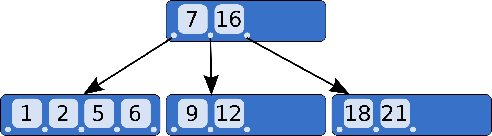
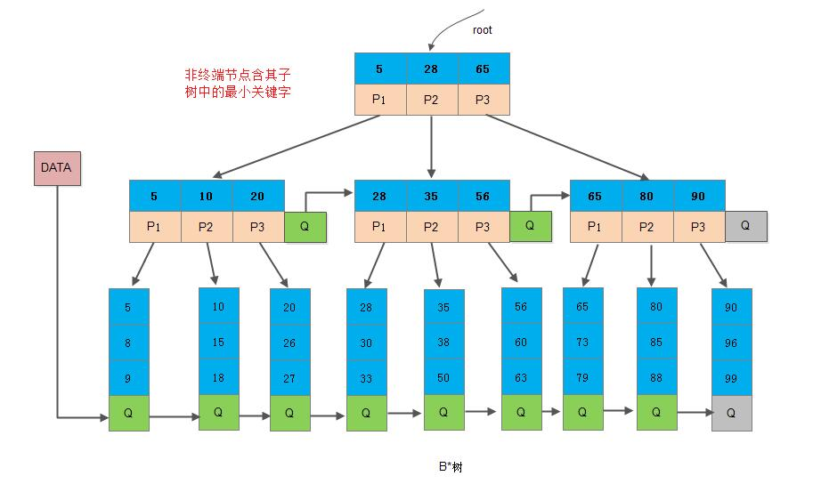

18. B 树
18.1. B 树
B 树是为磁盘或其他直接存取的辅助存储设备而设计的一种平衡搜索树。 B 树是一个一般化的二叉查找树，一个节点可以拥有 2 个以上的子节点。
B 树的查找、插入、删除操作的平均和最坏时间复杂度是 \(\mathcal{O}(\log n)\) 。
一个 \(m\) 阶的 B 树是一个有以下属性的树：
每一个节点最多有 \(m\) 个子节点。
每一个非叶子节点（除根节点）最少有 \(\lceil m/2 \rceil\) 个子节点。
如果根节点不是叶子节点，那么它至少有 2 个子节点。
所有叶子节点位于同一层。
有 \(k\) 个子节点的非叶子节点拥有 \(k-1\) 个有序关键字：\(key_1 \leqslant key_2 \leqslant \cdots \leqslant key_{k-1}\) 。 \(k\) 个指向子节点的指针：\(p_1,\ p_2,\ ...,\ p_k\) ，其中 \(p_1\) 指向关键字小于 \(key_1\) 的子树， \(p_k\) 指向关键字大于 \(key_{k-1}\) 的子树， 其他 \(p_i\) 指向关键字在区间 \((key_{i-1}, key_i)\) 的子树。
叶子节点和非叶子节点都存储了数据，即整棵树都分布了数据。非叶子节点的关键字本身就存储了数据，因此查找操作有可能在非叶子节点结束。
5 阶 B 树：
{kind=link}
18.2. B+ 树
B+ 树是 B 树的变体，也是一种多路搜索树，其定义基本与B-树同，额外属性：
非叶子节点的子树指针与关键字个数相同。
子树指针 \(p_i\) 指向关键字在区间 \([key_i, key_{i+1})\) 的子树。
为所有叶子节点增加一个链指针。
只有叶子节点存储了数据。非叶子节点相当于是叶子节点的索引，叶子节点相当于是存储数据的数据层。

B+ 树相比于 B 树的优点。
B+ 树的层级更少：每个非叶子节点存储的关键字数更多。
B+ 树查询速度更稳定：所有数据地址都存在叶子节点上。
B+ 树天然具备排序功能：所有的叶子节点数据构成了一个有序链表。
B+ 树全节点遍历更快：遍历整棵树只需要遍历所有的叶子节点即可。
B 树相对于 B+ 树的优点是：如果经常访问的数据离根节点很近，而 B 树的非叶子节点本身存有数据，所以会要比 B+ 树快。
18.3. B* 树
B* 树是 B+ 树的变体，在 B+ 树的非根和非叶子节点再增加指向兄弟的指针，将节点的最低利用率从 \(\frac{1}{2}\) 提升到 \(\frac{2}{3}\) 。
{kind=link}
18.4. 参考资料
平衡二叉树、B树、B+树、B*树
B树
B+树